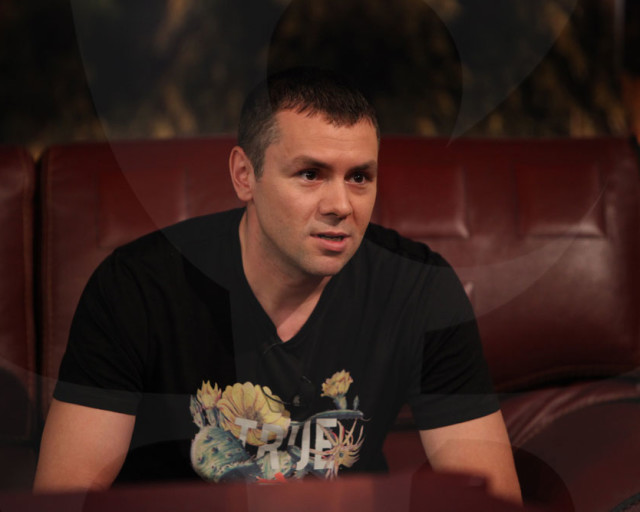
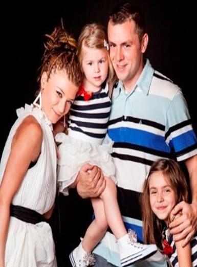
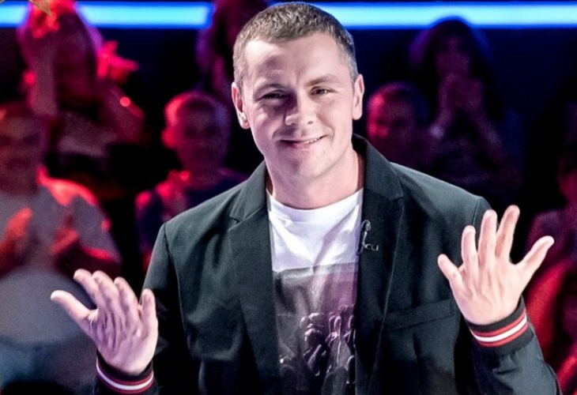
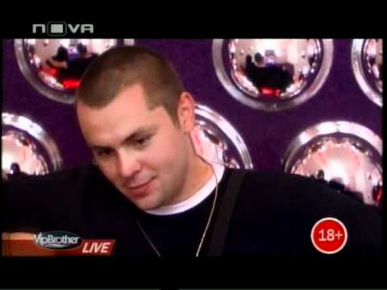
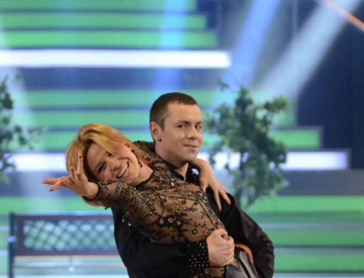

Биография
| Роден е на 19 декември 1979 г. в София. Има сестра, която се казва Наталия и е с осем години по-голяма от него. Христо завършва 76-то училище „Любчо Баръмов“ в София, а след него и Националната гимназия за древни езици и култури „Константин Кирил Философ“. Кандидатства в Нов български университет и е приет в специалността „Публична администрация“, но след 2 години прекъсва обучението си в НБУ заради музикалните си занимания. В очите на много хора създателят на група “Ъпсурт” вероятно изглежда бунтар, но е хубаво да знаят, че самият Ицо има друго тълкувание. | ||
|
6 интересни факта за Ицо 1. Добър кулинар 2. Ценител на Българската история 3. Текстописец 4. Много обича животни 5. Артистичен 6. Знае гръцки |
 |
Ицо Хазарта е човек на изкуството. Той е ценител на българската история и минало. Уважава и празнува всеки един български празник и прекарва много време със семейството си. Те пък, от своя страна, се радват на перфектно сготвените ястия от Ицо. |
|  |
На 24 април 2004 г. Ицо се жени за приятелката си – Диана, а 3 години по-късно се разделят. Имат дъщеря на име Аделина. Ицо е баща на две дъщери – Аделина е на девет, а Лора ще навърши четири през август. С майката на Ади Ицо се разделя през 2006-а, а Жени е жената, с която слагат ново начало. Жени споделя, че Ицо е добър и търпелив баща, усвоил тънкостите на кулинарията по своя воля. Затова е наясно с всички софийски магазинчета за качествени хранителни продукти. |
Формати, в които е участвал
|  |  |  |
| 1. X Factor | 2. Vip Brother | 3. Dancing stars |
|---|